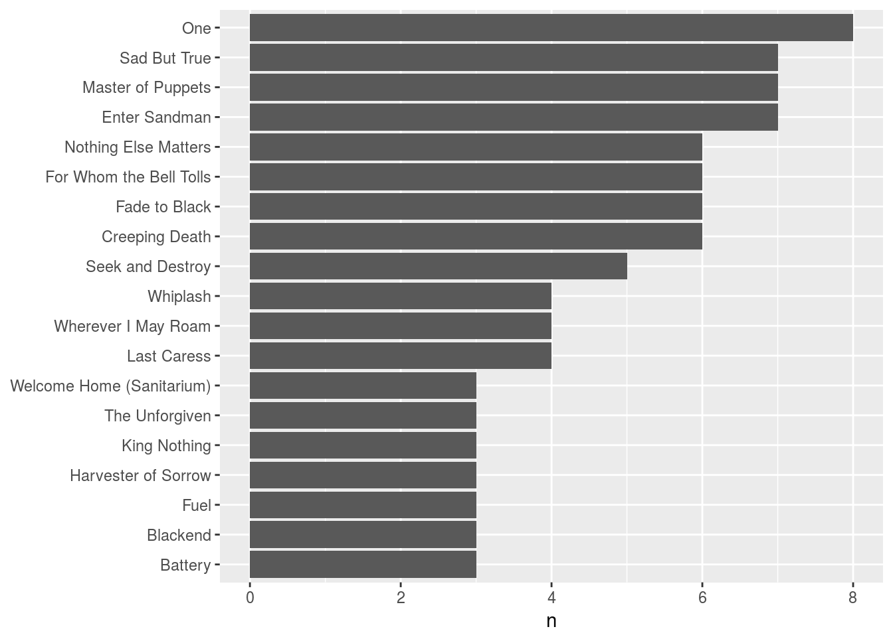
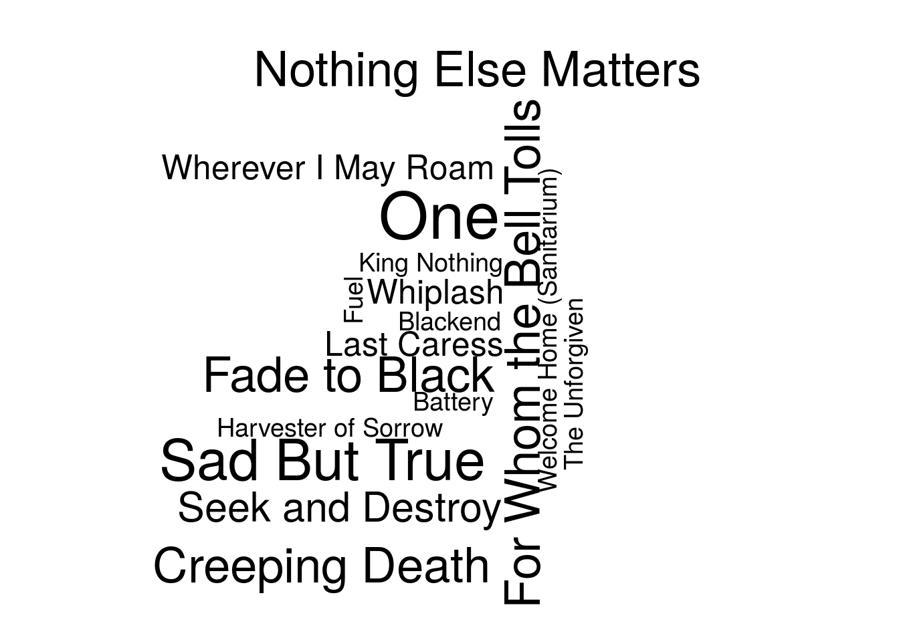

Introduction
Most of my work in R is hidden from public view–this seems like a blessing but is a curse in many respects; I get no feedback on my work in R.
I felt challenged and inspired by David Robinson’s post Advice to aspiring data scientist: start a blog
I completed the following analysis while in the midst of Hurricane Irma in September 2017, and I noticed the analysis utilizes many tidyverse functions. I also like how I referenced the Stack Overflow links when I had to work through a concept.
Metallica Concerts

I have attended eight (8) Metallica concerts from 1989 through 2017. Metallica makes available their sets list from their shows at Met on Tour. The only show where I had to use a different data source is the 1989 show in Cedar Rapids, Iowa. I used this SetList from Ames, Iowa as a proxy and this list matches my memory. Here is the set list from each show using a datatable.
tours <- read.delim("metallica_cours.txt") %>%
rename("Tour_Name" = "Tour_.Name")
#kable(tours)
setlist <- read.delim("setlist.txt")
#kable(setlist)
setlist_tour <- inner_join(setlist, tours, by="id") #join setlist with tours
#kable(setlist_tour)
setlist_tour <- setlist_tour %>%
select(3, 2, 6:9)
#kable(setlist_tour)
Tours
setlist_tour_tbl <- tours %>%
group_by(Tour_Name) %>% #group by tourname
select(5:6) # select variables City and Tour_Name
kable(setlist_tour_tbl) #display pretty table
| City | Tour_Name |
|---|---|
| Cedar Rapids | Damaged Justice |
| Cedar Rapids | Wherever We May Roam |
| Des Moines | Lollapalooza |
| Ames | Pour Touring Me |
| St. Petersuburg | M2K |
| Tampa | Madly In Anger With The World |
| Tampa | World Magnetic |
| Orlando | World Wired |
Song Count by City
I have seen Metallica perform the most songs in Cedar Rapids, Iowa and a close second is Tampa, FL.
setlist_tour_city <- setlist_tour %>%
count(City) #get count of City of Tour
kable(setlist_tour_city) #display pretty table
| City | n |
|---|---|
| Ames | 20 |
| Cedar Rapids | 37 |
| Des Moines | 16 |
| Orlando | 18 |
| St. Petersuburg | 18 |
| Tampa | 36 |
From this set list of eight tours some song titles are repeated and on average song_titles repeat 2.3 times.
song_count_avg <- setlist_tour %>%
count(song_title) %>% #get a count of songs from setlist
summarise(song = mean(n)) #get average
kable(song_count_avg) #display pretty table
| song |
|---|
| 2.301587 |
Below is a graph of the song_titles I have heard more than once. At first, glance, I was surprised that I had not seen Master of Puppets eight times. I checked the data and it occurred to me during the M2K Tour in St. Petersburg that Metallica performed Masterarium–a mix of Master of Puppets and Welcome Home Sanitarium–A fantastic performance.
To produce the plot below I used techniques from Text Minning with R
song_count <- setlist_tour %>%
count(song_title, sort = TRUE) #set up for graph
#kable(song_count)
setlist_tour %>%
count(song_title) %>%
filter(n >2) %>%
mutate(song_title = reorder(song_title, n)) %>% #this changes the order of the graph
ggplot(aes(song_title, n)) +
geom_col() +
xlab(NULL) +
coord_flip()

This article helped me figure out to perform a count using factors.
Number of Song performed
On average, Metallica performed 18 songs when I went to see them.
tour_count_avg <- setlist_tour %>%
group_by(Tour_Name) %>% #group the songs by tour
summarise(song_title = length(song_title)) %>% #get a count of the song_title; song_title is a facotr
summarise(song_title= mean(song_title)) #obtain mean of the counts
kable(tour_count_avg) #display pretty table
| song_title |
|---|
| 18.125 |
Here is a breakdown of the number of songs played during each tour stop.
song_count_tour <- setlist_tour %>%
group_by(Tour_Name) %>%
summarise(song_title = length(song_title))
kable(song_count_tour)
| Tour_Name | song_title |
|---|---|
| Damaged Justice | 16 |
| Lollapalooza | 16 |
| M2K | 18 |
| Madly In Anger With The World | 18 |
| Pour Touring Me | 20 |
| Wherever We May Roam | 21 |
| World Magnetic | 18 |
| World Wired | 18 |
Wordcloud Mess
This stackoverflow question and answer helped me with this WordCloud. At least it helped me plot all the songs.
song_count_wc <- setlist_tour %>%
count(song_title) %>%
with(wordcloud(song_title, n, scale = c(3, 0.1)))

Conclusion
One area for future development is to learn how how to scrape the setlist data from the web. I manually entered into a spreadsheet and turned them into a text file.